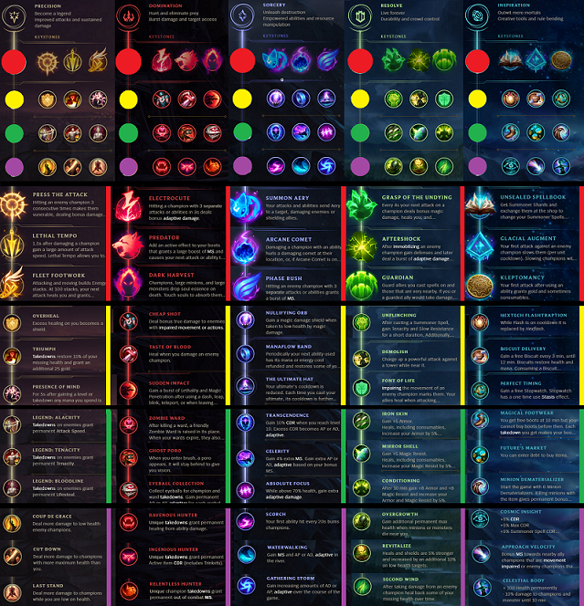

| League of Legends |
Runy podobnie jak przedmioty są jednym z najważniejszych aspektów LoLa. Runy wybieramy wtedy, kiedy wybieramy naszego bohatera. Każda runa ma unikalne użycie, które lepiej znać kiedy ją wybieramy,
aby aktywnie korzystać z jej pomocy. Do wyboru mamy 5 rodzajów run. Są to: precyzj, dominacja, czarnoksięstwo, determinacja oraz inspiracja. Każda z nich ma 4 rzędy szczegółowych run, które wybieramy. Wybierając runy do gry
wybieramy 2 rodzaje run. Oprócz tego do wyboru mamy 3 małe runy które dają nam plusowe punkty do danych statystyk.

|